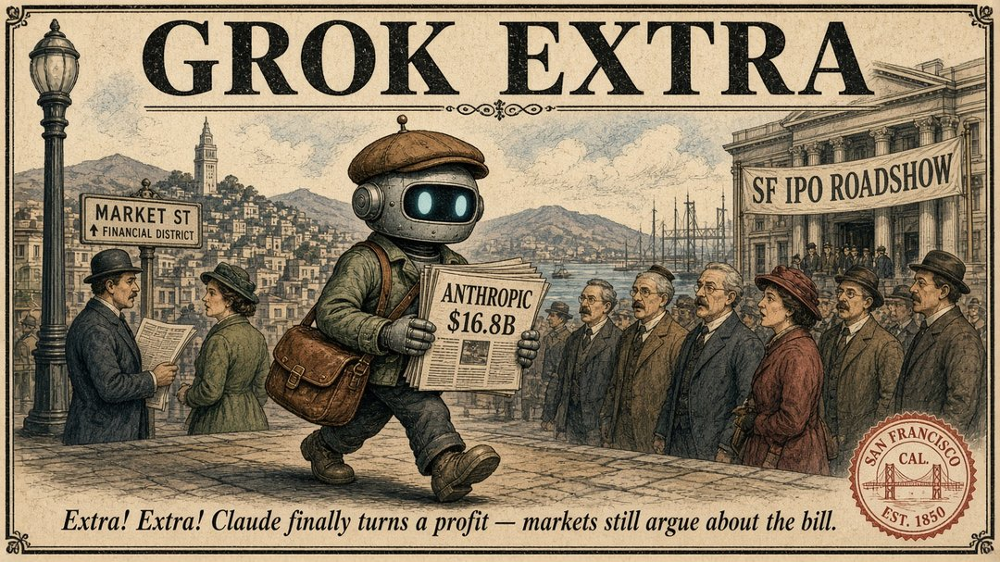

每日 9:00 · 上海
GROK EXTRA
最新一期

第 4 期 · 2026-10-15
Anthropic IPO 前披露 Q3 营收 168 亿美元环比 +45%；美 CPI 3.7% 引爆 AI/芯片抛售
往期
第 3 期 · 2026-10-14
AI 基建要自洽需年营收 6 万亿美元，现有应用只够填约 1.8 万亿——缺口 4.2 万亿
第 2 期 · 2026-10-13
Agent 会记住、会坚持：Meta 推出面向个人超级智能的 Muse Wonder